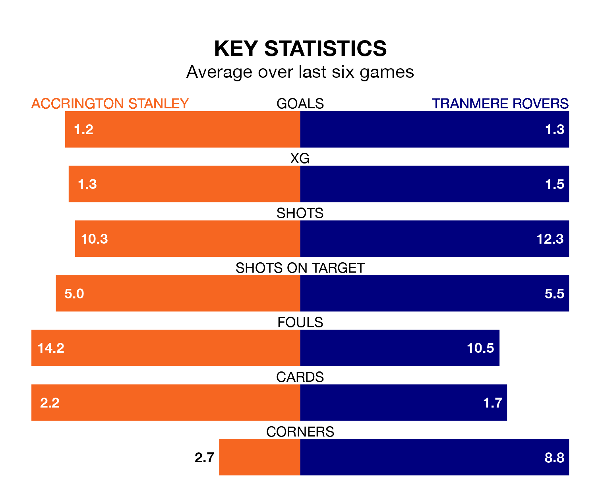

Accrington Stanley welcome Tranmere Rovers to the Wham Stadium on Saturday looking to pick up points to end their three-game losing streak.
Accrington's struggles have left them with just four points from their last six EFL League Two matches, while their opponents have earned seven from a possible 18.
With 59 goals in 45 games so far this season, Accrington are scoring at below the league average rate with 1.3 goals per game. And they are conceding more than average, letting in 70 goals at a rate of 1.6 per game.
Tranmere, meanwhile, are average scorers, with 1.5 goals per game. They have also conceded 1.5 goals per game.
Stanley are 18th in the table after 45 games, of which they have won 15 and drawn nine, earning 54 points.
Rovers are two places ahead of the home team in 16th, with 17 wins and six draws putting them on 57 points.
In the last five years, Accrington and Tranmere have played each other on five occasions. Tranmere won three of them and they drew twice.
On average, Accrington scored 1.0 goal and Tranmere 1.8 in those matches.
Their last meeting was on September 23, when Tranmere won 2-0 at home.
Accrington's last match was on April 20, a 4-2 loss against Stockport County, with Jack Nolan and Shaun Whalley getting the goals for Accrington.
Tranmere beat AFC Wimbledon 3-2 last time out, also on April 20, with Conner Jennings, Harvey Saunders and Robert Apter on the scoresheet.
Updated: 07:59 (UTC), 26/04/24